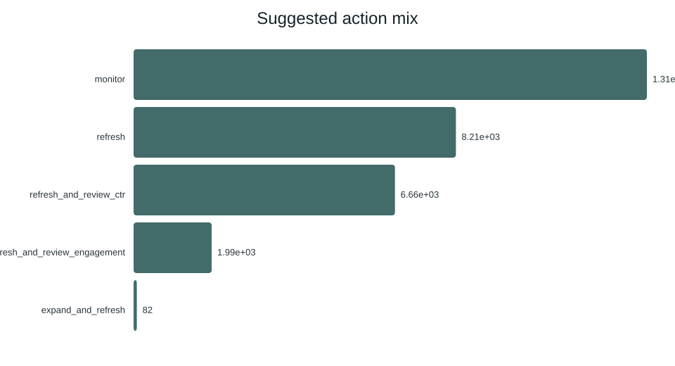
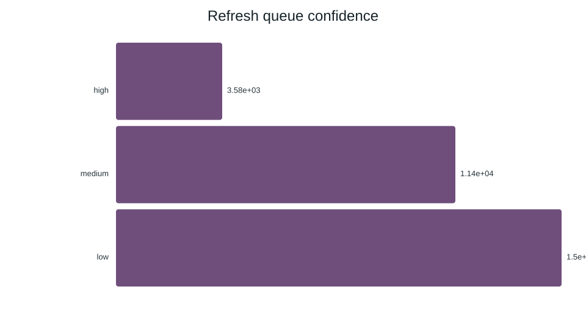

Ranking Content-Refresh Candidates
A public-safe study of whether a model can prioritize existing content for human review more effectively than a transparent rule baseline.
Abstract
Question. Can a supervised model rank existing content-refresh candidates more precisely than a transparent rule-based queue, without using titles, URLs, client names, domains, keywords, or label-derived trend fields?
Method. I used the bundled anonymized 30,000-row teaching slice, defined decline as trend_direction == "down", built 52 numeric and categorical features from the permitted content and performance fields, and compared logistic regression, a decision tree, random forest, and a rule baseline under a client-holdout split.
Result. The selected random forest achieved ROC AUC 0.747, average precision 0.610, and Precision@50 0.680 on the holdout, versus 0.627, 0.468, and 0.240 for the baseline rules on the same evaluation design.
Interpretation. The model improves ranking quality in this slice, but the result is an association for prioritization—not a causal estimate, a forecast of a search engine’s algorithm, or evidence that refreshing a page will improve traffic.
Use. The practical output is a ranked reviewer queue: inspect high-confidence candidates first, verify editorial context manually, and measure any subsequent refresh experiment separately.
1. Introduction / Problem statement
Content teams often have more pages that might deserve attention than they can review in one work cycle. The operational decision is therefore not “which page is good?” but “which existing items should a human inspect first, given limited review capacity?”
This study treats that decision as a ranking problem. A false positive costs reviewer time; a false negative can delay attention to a genuinely declining item. The model is designed as decision support for triage, not an automatic publishing or deletion system.
2. Data
The analysis uses the repository’s bundled content_refresh_anonymized.csv starter slice: 30,000 rows, with aggregated content and search-performance measures over a trailing 90-day window ending at export time. The label is available for evaluation but is excluded from the feature matrix.
| Item | Specification |
|---|---|
| Release used | Bundled anonymized starter CSV, not the full warehouse release. |
| Rows | 30,000 input rows; 27,675 training rows and 2,325 client-held-out test rows. |
| Time window | Trailing 90-day aggregate features; trend label compares the last 30 days with the previous 30 days within that reporting window. |
| Label | is_declining_label = 1 when trend_direction == "down"; 16,262 positive rows, a 54.2% positive rate. |
| Excluded | Titles, URLs, domains, keywords, client-identifying fields, provider/model names, trend_direction, and trend_pct. The trend fields define the label and would leak the answer. |
The repository documents a separate full pseudonymized warehouse release of approximately 79 million daily rows. It was not downloaded or used for the numbers on this page. That distinction is deliberate: the results below are reproducible from the public repository’s bundled slice, and no claim is made that this experiment itself trained on 79 million rows.
3. Methodology
Features and assumptions
The pipeline imputes permitted numeric missing values with zero and categorical missing values with unknown, then derives log-scaled traffic fields and interpretable tiers. The model uses 19 numeric features, including search volume, competition, content length, log impressions/clicks/sessions, activity-day counts, age, recency, CTR, position, engagement, scroll rate, and AI-traffic share, plus eight categorical features such as competition level, content type, intent, age, freshness, word-count, impression, and position tiers.
These are predictive features, not causes. In particular, feature importance indicates how the fitted random forest partitions this dataset; it does not show that changing a feature will cause the label to change.
Label and baseline
The baseline is a transparent rules-based refresh score built before model selection. It is a fair comparator because it ranks the same held-out rows for the same binary decline label and is evaluated with the same ranking metrics. The random forest is selected by holdout Precision@50, matching the practical capacity framing of reviewing a short top queue.
Validation and leakage checks
The split is a client holdout: client groups are kept apart between training and test sets to reduce cross-client memorization. Random seeds are fixed in the pipeline. The label-derived fields trend_direction and trend_pct are excluded from features, and pseudonymous IDs are used only for grouping, never as predictors. The full-release query-window warning is also documented in the repository; overlapping label-period fields must not be used as features in a future time-forward experiment.
4. Results
| Method | ROC AUC | Average precision | Precision@50 | Recall | F1 |
|---|---|---|---|---|---|
| Rule baseline | 0.627 | 0.468 | 0.240 | 0.189 | 0.274 |
| Logistic regression | 0.700 | 0.522 | 0.400 | 0.567 | 0.566 |
| Decision tree | 0.742 | 0.575 | 0.660 | 0.716 | 0.634 |
| Random forest | 0.747 | 0.610 | 0.680 | 0.741 | 0.638 |



The model’s Precision@50 is 0.680 versus 0.240 for the baseline, an absolute improvement of 0.440 on the same holdout ranking task. Because the positive rate is 54.2%, the top-50 result should be interpreted alongside the base rate and the other metrics; it is not a guarantee that every top-ranked item needs a refresh.
5. Limitations & honest framing
This is a retrospective experiment on an anonymized teaching slice. It does not establish causality, measure the effect of editing or refreshing content, predict a search engine’s ranking algorithm, or guarantee performance after deployment. The label is a proxy for a particular observed decline definition, and the trailing-window construction may not represent every publishing cadence.
The client-holdout split is stronger than a random row split for testing cross-client generalization, but it is not a time-forward production simulation. The starter slice is also much smaller than the documented full warehouse release. Thresholds, missing-value treatment, score calibration, and subgroup performance should be revalidated before operational use.
6. Ranked recommendations
| Rank | Action playbook | Reason and confidence |
|---|---|---|
| 1 | Review the high-confidence top queue first, checking page context and measurement quality before editing. | Highest expected triage value under a limited review budget; decision-support confidence only. |
| 2 | Prioritize candidates with visible demand but weak CTR or engagement signals for editorial diagnosis. | These signals help distinguish “worth investigating” from “little observed opportunity”; they do not prove the remedy. |
| 3 | Use content age and recent-update recency as review context, not as automatic refresh rules. | They are among the stronger model signals, but they may reflect confounding by content type or publishing policy. |
| 4 | Run a controlled before/after or holdout experiment for any refresh intervention. | Only an appropriate experiment can estimate whether the intervention changed outcomes. |
| 5 | Monitor performance by client group, time window, content type, and traffic volume before expanding. | Protects against distribution shift and the documented low-volume and client-group limitations. |
7. Reproducibility
The complete source, scripts, anonymized input, outputs, and working notebooks are in the GitHub repository. The capstone notebook is work/notebooks/capstone.ipynb; the generated model report and metrics are also linked from the repository’s outputs directory.
git clone https://github.com/SunSpot-Tech/Flyrank_Internship.git cd Flyrank_Internship python -m pip install -r requirements.txt python scripts/run_all.py
The pipeline uses the repository’s fixed random state and writes the feature vector, predictions, model metrics, ranked queue, charts, Markdown report, and PDF summary. The public page intentionally embeds only aggregate results and non-identifying examples.
8. Acknowledgments & data credit
Built on the FlyRank ML Internship dataset. The data source and repository documentation are credited here as standard research practice. This public artifact uses the repository’s anonymized starter slice and excludes client-identifying details, raw queries, URLs, domains, titles, and keywords.